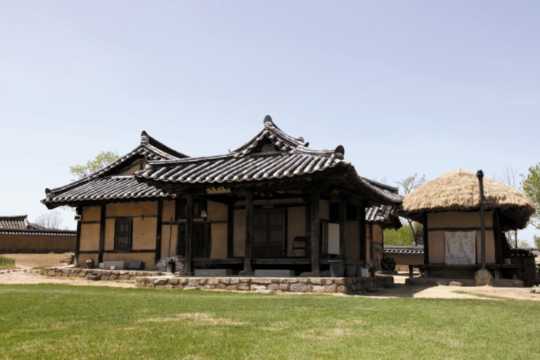
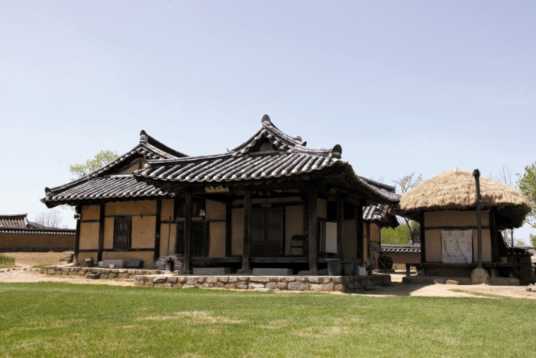

초가,기와집
한국의 전통 가옥으로는 대표적으로 기와집과 초가가 있다. 먼저 기와집은 기와로 지붕을 만든 집이다. 보통 찰흙으로 만든 검은색 기와를 많이 썼으나, 신분이 높은 사람이 거주하는 집은 푸른 유약을 발라 만든 청기와로 지붕을 이기도 하였다. 기와는 상당히 비쌌기 때문에, 일반 농민들이 기와집을 짓고 살거나 사기에는 상당히 어려웠다. 기와집은 조선시대의 유교의 영향 라고 한다. 두번째로 초가는 단열과 보온성은 우수하나 여름철에는 벌레가 생기며 화재의 위험이 많고 특히 인근 화재 때는 비화(飛火)되기가 쉽다. 또한 볏짚으로 인 것은 매년 1번씩 다시 이어야 하므로 자료의 손실은 물론 번거롭다. 갈대나 새를 엮어 인 지붕을 새나리지붕이라고 하며, 비교적 수명도 길고 깨끗하나 주로 농촌에서는 볏짚으로 인 것이 많다.
 
